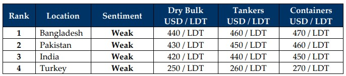

inWeekly Demolition Reports02/06/2025

The ongoing season of “Tariff Dramas” continues on in exciting fashion as this week, Team Trump turned the heat on steel imports into the country levyingfresh tariffs on nations currently exporting various grades of the metal to the U.S., which is unquestionably set to dampen global steel prices and ship recycling sentiments across the Indian sub-continent once again. Every week is now intent on bringing with it, an entirely new economic reality for the world to re-adjust to, turning everyday business practices into an extremely erratic and volatile way of conducting any type of practical international trade, which stands to deliver a year of buckled performances, given that key global economic indicators are increasingly displaying the ill-effects of. Oil, the liquid gold powering the engines of the planet, continues to slip week after week as it fell over 1% and closed the week out at USD 60.40 / barrel, all while the back and forth between Trump and the Appeals courts saw the reversing and reinstating of tariffs within the span of just 12 hours, further adding to the uncertainty and unpredictability of (global) trade laws that are being tossed around in a petulant battle of authoritative ping-pong and has led to a fight at the U.S. Supreme Courts. Freight rates too are being subjected to conflating performances across weeks as only last week did the markets witness charter rates fall, to see them rise back up as the Baltic Dry Exchange Dry Index soared a whopping (nearly) 5% this week, driven primarily on the back of the Cape size sector, which itself reported a 10.6% jump, reaching the highest levels seen since April of this year.
On the receiving end of the mental economic milkshake is the sub-continent ship recycling sector, which, in addition to the above, has also seen subjected to unpredictable tonnage availability across much of 2025, along with a fresh batch of monsoon rains that ingloriously kicked-off across the sub-continent markets this week. And as has been case for sub-continent recycling markets, the rains will deliver the conventional decline in demand and pricing, regardless of availability of tonnage at the bidding tables over the next quarter or so. Currencies too continue to take a beating as nearly all of the major ship recycling destinations reported declines against the U.S. Dollar, except Pakistan, which also (surprisingly) reported more arrivals this week, than neighboring India has over the last 2. Indian recyclers have clearly endured another difficult week following the fragile cessation of an armed conflict with Pakistan, as Indian offers on tonnage have notably retreated by over 5% since the peaks seen of early May.
In terms of yards getting ready for the Hong Kong Convention, Pakistani recyclers remain some ways behind all of their industrywide counterparts and despite some initial works reportedly taking place, not a single yard in Gadani will be anywhere near HKC ready by June 26th, thus eliminating this vital sector until they get their ducks in a row. Bangladeshi recyclers on the other side, have demonstrated clear progress as yards continue to seek HKC approvals and an impressive collection of ocean-front businesses and recycling yards continue to be developed into a photograph-worthy scene. Finally, Turkey on the far end has nothing to report, other than another drop in the Lira. Overall, as we enter the rainy season, the likelihood that this festering buffet of bad economic decisions will inevitably deliver a market correction remains high, particularly as tariffs on steel prices (the prime mover of offers from global recyclers) are yet to settle in the coming week(s).
For Week 22 of 2025, GMS Market Rankings / vessel indications are as below.

📄 Download PDF: Ship-recycling-market-insight-Week-22-05-30-2025-June_Jitters.pdfSource: GMS,Inc.https://www.gmsinc.net/gms_new/index.php/web